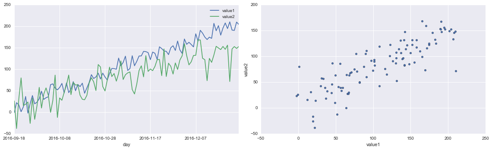

Why?
Recently my main analysis tool was switched to python, a language that I have not touched for a year. Remember that the first time I used python was because of an NLP project, which python has great packages to deal with. Then with the popularity of pandas at that time, I started implementing ML models using python; however it would not be my first choice for most of the analyses simply because I could not find a GUI that is interactive enough to prototype my ideas fast.
I hate the feeling that when I come to visualization in python I became pretty clumsy. After reading several documents and blogs about python visualization, I started liking it. The tools available in python like Matplotlib, pandas's build-in plotting and seaborn are definitely not any worse than ggplot. I mean it is hard to compare amont these tools and make a conclusion that one is better than other, but it would be nice to tell their strengths and weaknesses and pick the right tool to use quickly when tasks come. I decided to write a post to help me ramp up on this, and hope it helps others.
Here are some links to some popular visualization tools: matplotlib pandas seaborn Boekh ggplot plotly
import pandas as pd
import numpy as np
import datetime
import random
import calendar
import matplotlib.pyplot as plt
%matplotlib inline
import seaborn as sns
from scipy import stats
Generate a dummy dataset
The dataset contains two time series values in daily level.
def get_monday(date, format = '%Y-%m-%d'):
ts = datetime.datetime.strptime(date, format)
mon_ts = ts - datetime.timedelta(days=int(ts.strftime('%w')) - 1)
return mon_ts.strftime(format)
n = 100
np.random.seed(123)
ts = pd.date_range(pd.datetime.today(), periods=n)
day = ts.strftime('%Y-%m-%d')
week = [get_monday(d) for d in day]
wday = ts.strftime('%A')
category = [random.choice(['A', 'B', 'C']) for x in range(n)]
value1 = [10 + 2 * x + float(np.random.normal(0, n**0.5, 1)) for x in range(n)]
value2 = [10 + 1.5 * x + float(np.random.normal(0, n**0.7, 1)) for x in range(n)]
df = pd.DataFrame({
"ts": ts,
"day": day,
"week": week,
"wday": wday,
"category": category,
"value1": value1,
"value2": value2,
})
df.head(3)
| category | day | ts | value1 | value2 | wday | week | |
|---|---|---|---|---|---|---|---|
| 0 | B | 2016-09-18 | 2016-09-18 15:35:13.687869 | -0.856306 | 26.127685 | Sunday | 2016-09-19 |
| 1 | A | 2016-09-19 | 2016-09-19 15:35:13.687869 | 21.973454 | -38.182299 | Monday | 2016-09-19 |
| 2 | B | 2016-09-20 | 2016-09-20 15:35:13.687869 | 16.829785 | 30.891279 | Tuesday | 2016-09-19 |
Pandas' build-in plotting
Pandas DataFrame and Series has .plot namespace and there are many ployt types available such as hist, line, scatter , barchart and etc. This is definitely provides a quickest way to vizulize the data, epecially when exploring a DataFrame object.
fig, ax = plt.subplots(ncols=2, figsize=[16,5])
df.plot.line(ax=ax[0], x = 'day', y = ['value1', 'value2'])
df.plot.scatter(ax=ax[1], x = 'value1', y = 'value2')
plt.tight_layout()

Seaborn
I found seaborn is highly integrated with matplotlib and pandas' build-in plotting and it is pretty flexible and powerful. You can make an attractive plot with less than several line of codes. Here are some simple examples.
fig, ax = plt.subplots(figsize=[16, 5])
sns.barplot(data=df, x='wday', y='value1', hue='category', ax=ax)
sns.despine()
sns.set(style="ticks")
fig = sns.JointGrid(data=df, x='value1', y='value2', size=5)
_ = fig.plot_joint(sns.regplot, color='g')
_ = fig.plot_marginals(sns.distplot, color='g', bins=15)
_ = fig.annotate(lambda r,p: stats.pearsonr(r,p)[0]**2, fontsize=14,
template='{stat}: {val:.2f}', stat='$R^2$', loc='upper left')
fig = sns.FacetGrid(df, col='wday', hue='wday', col_wrap=4)
_ = fig.map(sns.regplot, 'value1', 'value2', ci=None, order=1)
fig = sns.FacetGrid(df[0:min(n, 4*7)], row = 'week', aspect=5, margin_titles=True)
_ = fig.map(sns.kdeplot, 'value1', shade=True, color='y')
_ = fig.map(sns.kdeplot, 'value2', shade=True, color='c')
_ = fig.set_xlabels('value')
_ = fig.add_legend()
for ax in fig.axes.flat:
ax.yaxis.set_visible(False)
fig.fig.subplots_adjust(hspace=0.1)
sns.despine(left=True)

iris = sns.load_dataset("iris")
def hexbin(x, y, color, **kwargs):
cmap = sns.light_palette(color, as_cmap=True)
plt.hexbin(x, y, gridsize=15, cmap=cmap, **kwargs)
fig = sns.FacetGrid(data=iris, hue='species', col='species')
_ = fig.map(hexbin, 'sepal_length', 'sepal_width', extent=[3,9,1,5])
fig = sns.PairGrid(iris, hue='species')
_ = fig.map_diag(plt.hist)
_ = fig.map_offdiag(plt.scatter)
_ = fig.map_lower(sns.kdeplot, cmap="Blues_d" , alpha=0.25)
_ = fig.add_legend()
In practice
Here is a simple example to use seaborn to find a good combination of model parameters
from sklearn.ensemble import RandomForestClassifier
from sklearn.grid_search import GridSearchCV
titanic = sns.load_dataset('titanic')
titanic.head(3)
| survived | pclass | sex | age | sibsp | parch | fare | embarked | class | who | adult_male | deck | embark_town | alive | alone | |
|---|---|---|---|---|---|---|---|---|---|---|---|---|---|---|---|
| 0 | 0 | 3 | male | 22.0 | 1 | 0 | 7.2500 | S | Third | man | True | NaN | Southampton | no | False |
| 1 | 1 | 1 | female | 38.0 | 1 | 0 | 71.2833 | C | First | woman | False | C | Cherbourg | yes | False |
| 2 | 1 | 3 | female | 26.0 | 0 | 0 | 7.9250 | S | Third | woman | False | NaN | Southampton | yes | True |
clf = RandomForestClassifier()
param_grid = dict(
max_depth=[1, 2, 5, 10, 20, 30, 40, 50],
min_samples_split=[2, 5, 10],
min_samples_leaf=[2,3,4,5],
)
est = GridSearchCV(clf, param_grid=param_grid, n_jobs=4)
y = titanic['survived']
X = titanic.drop(['survived', 'who', 'alive'], axis=1)
X = pd.get_dummies(X).fillna(value=X.median())
est.fit(X, y)
GridSearchCV(cv=None, error_score='raise',
estimator=RandomForestClassifier(bootstrap=True, class_weight=None, criterion='gini',
max_depth=None, max_features='auto', max_leaf_nodes=None,
min_samples_leaf=1, min_samples_split=2,
min_weight_fraction_leaf=0.0, n_estimators=10, n_jobs=1,
oob_score=False, random_state=None, verbose=0,
warm_start=False),
fit_params={}, iid=True, n_jobs=4,
param_grid={'min_samples_split': [2, 5, 10], 'max_depth': [1, 2, 5, 10, 20, 30, 40, 50], 'min_samples_leaf': [2, 3, 4, 5]},
pre_dispatch='2*n_jobs', refit=True, scoring=None, verbose=0)
def gen_param_scores(CV_fitted):
est = CV_fitted
scores = est.grid_scores_
rows = []
params = sorted(scores[0].parameters)
for row in scores:
mean = row.mean_validation_score
std = row.cv_validation_scores.std()
rows.append([mean, std] + [row.parameters[k] for k in params])
scores = pd.DataFrame(rows, columns=['score_mean', 'score_std'] + params)
return scores
score_table = gen_param_scores(est)
params = score_table.columns[2:]
fig = sns.factorplot(x=params[0], y='score_mean', data=score_table, col=params[1], hue=params[2], col_wrap=2)
score_table.sort_values('score_mean', ascending=False).head(1)
| score_mean | score_std | max_depth | min_samples_leaf | min_samples_split | |
|---|---|---|---|---|---|
| 46 | 0.828283 | 0.036055 | 10 | 5 | 5 |
Leave your comments below.